0.3.0 · Sockets, quivers and the classes
Signets, Pendants and Runebands put sockets in jewellery, every quiver family gets its own uniques and crafts, Gilded Fallen become a prize, and every class gets a second look.
0.3.0 · Public · Compared with 0.2.0. 201 changes in 10 sections.

The Descent
1 change- The Echo of Inarius's escorts no longer drop Tear of Inarius.

Treasure Vaults and Gilded Fallen
7 changes- Gilded Fallen now walk at speed 11 (previously 8).
- Gilded Fallen now run at speed 16 (previously 12).
- Gilded Fallen now glow with a gold aura ring.
- Gilded Fallen now have light radius 10 (previously 6).
- Gilded Fallen now drop one gold pile worth 10 times a normal pile (previously 4 times).
- Every equipment and jewellery drop from a Gilded Fallen that can be rare is now rare, set or unique. Charms stay magic or unique.
- The 25 Fallen in the Gilded Vault get the same drops. Public issue #15

Items and Crafting
23 changesQuivers4 changes
- Plain Arrows and Bolts are no longer sold by vendors and no longer drop. Stacks you already have still load and never run out.
- Charsi, Gheed, Akara, Fara, Elzix, Hratli, Asheara, Halbu, Larzuk and Anya now always sell white Hexed Arrows and Hexed Bolts.
- In Normal, an ammo drop is now a magic or rare family quiver one time in five (previously Arrows or Bolts almost every time, and a family quiver about one time in 34).
- Family quivers can now be gambled at every gambler.
- Hexed, Flight and Anointed quivers now drop as normal items in Normal and Nightmare, and roll magic or rare like any other item (previously always magic or rare). Hell still drops them magic or rare.
- Arrows and bolts can now be crafted. Hit Power, Blood, Caster and Safety recipes take a magic Hexed, Flight or Anointed quiver, or a Graven quiver, with a Jewel, a rune and a Perfect gem. Crafted quivers keep their family's line and never run out.
- Graven Arrows and Graven Bolts now drop from Nightmare (previously Hell and endgame areas only).
- Barbarian helms can now roll Sprawling, of Reach and of Far Reach.
- The Hearthless Torc now uses the Pendant base.
- Hearthless Torc copies you already have stay amulets.
- Stone tier 13 to 15 bosses in Hell can now drop six new uniques: Hand of Dominion, Ninefold Fang, The Engorged Codex, Viz-Jun's Last Spark, Censer of Zakarum and Pack-Mother's Hide. Each is 1 in 600 per boss kill, and 1 in 100 for any of the six.
Signets and Pendants5 changes
- Added the Signet, a ring base that always has one socket. A gem or rune in a Signet gives its weapon bonus.
- Added the Pendant, an amulet base that always has one socket. A gem or rune in a Pendant gives its shield bonus.
- Signets and Pendants now drop wherever rings and amulets drop, and every vendor that sells jewellery can stock them.
- Rings no longer roll sockets. Rings that already have a socket keep it.
- Signets and Pendants have their own icons.
Runebands7 changes
- Added 16 Runebands, white rings that always have one socket and hold all but the last rune of a runeword.
- Added one-rune completion for each Runeband. Inserting its last rune grants every property of the full runeword.
- Added the held runes’ socket bonuses to unfinished Runebands. Each band uses the socket bonuses of its word’s usual equipment slot.
- Added Runeband drops from Hell monsters in Sanctuary Stones, all five Descent bands and their Echoes, and the Crypt of the Vigil.
- Added a Runebands loot-filter category with a separate entry for each band.
- Added Eye of Reckoning refusals for every Runeband. The cube consumes nothing.
- Each Runeband's tooltip lists the runes it holds, then the rune that completes it. Runeband of Lawbringer reads "Amn · Lem, then insert the Ko Rune".

Currency
1 change


- The Quill of Inscription, Jawbone of Lies, Heart of Ascension, Tail of Chaos and Toe of Unmaking now work on Hexed, Flight and Anointed Arrows and Bolts. Quivers keep their family's line and never run out.

Uniques, Sets and Runewords
54 changes- Ismail Vilehand, Geleb Flamefinger, Toorc Icefist, Bremm Sparkfist, Wyand Voidfinger and Maffer Dragonhand now each drop Kurast Votive in Normal, Marius' Lament in Nightmare and Mephisto's Shard in Hell, 1 in 30 kills in a one-player game. The chance rises with the number of players, like other drops.
- Other Council members no longer drop these jewels, and drop their usual loot.
- Horadric Lens now drops only from the Summoner in Hell, 1 in 30 kills in a one-player game.
- In Hell terror zones, only these six named Council members drop a Sanctuary Stone and the terror-zone uniques. Other Council members drop their usual loot.
- Fixed a bug where a boss's own unique could drop as a different unique of the same base. Blood Raven's Fang, Radament's Skull, Heart of the Hellforge, Quenchstone, Countess' Weeping Stone, Sankekur's Tithe, Baal's False Promise, The Elders' Pyre, Arcane Glass, Tear of Inarius, Spider Forest Emerald, Alkor's Transmutation, Golden Bird Topaz, Flayer's Tooth, Frozen River Sapphire, Sescheron's Wrath, Ivgorod Prayer-Bead, Aranoch Sandglass and Arcane Lodestone now drop from their bosses on bases of their own, at the same odds.
- Copies you already have keep their stats. Blood Raven's Fang, Radament's Skull, Sankekur's Tithe, Baal's False Promise and The Elders' Pyre still drop in the world as before.
- Arcane Lodestone, Quenchstone, Alkor's Transmutation, Tear of Inarius and Sescheron's Wrath now drop only in Hell, where their bosses are high enough level to drop them. Arcane Lodestone drops from the Summoner in Hell, 1 in 25 kills.
- Lord De Seis in Nightmare now drops his usual loot only.
- Added 8 unique Signets and Pendants that keep their socket: The Refugee's Token, The Pauper's Mark, Leechmark, The Apprentice's Glass, The Clansman's Oath, The Annalist, The Iron Decree, The Last Lantern.
- Added 19 gem-fed unique Signets and Pendants. Cubing one with a Perfect gem from its menu grows one of its properties.
- A gem-fed unique takes up to 10 Perfect gems in total. The 10th gem adds one more property.
- A gem-fed unique shows "Gems Fed" and the gems it accepts. The cube consumes nothing when the gem is not on its menu, when it is full, or when it is Corrupted.
- The Eye of Reckoning cannot reroll a gem-fed unique.
- The gem-fed uniques are Forgeward, The Banked Fire, Glacierward, The Deepening Cold, Fenward, The Spreading Blight, Duskward, The Honing Edge, Prismward, The Clearing Sky, The Gathering Storm, Skullthorn, Gravedrinker, The Yshari Reliquary, Horazon's Focus, The Solstice, Bone and Slate, The Magpie and The Miser's Bite.
- The Magpie and The Miser's Bite drop only from Gilded Fallen caches.
- Viz-Jaq'taar Signet has been renamed to Viz-Jaq'taar Oath-Ring.
- Ring of the Cast Shadow has been renamed to Ring of the Cast Shadow.
- Added Skovos Stormtine, a Lightning Strike spear with additional Chain Hits.
- Added Askari Rimebow, a Freezing Arrow bow with an additional projectile.
- Added Skovos Emberbow, an Exploding Arrow and Immolation Arrow bow with an additional projectile.
- Added The Unforgotten Sister, a Valkyrie coronet with +1 Maximum Summons.
- Added First Hunt, a levelling Feral Rage pelt.
- Added Rootward, a Maul and Shock Wave pelt.
- Added Briarfever, Rabies gloves with poison penetration.
- Added Anvilbrow, a Concentrate, Bash and Stun helm.
- Added Askari Warpoint, a physical Jab and Fend Harpoon.
- Added Skovos Bloodtine, a physical Jab and Fend javelin with Amplify Damage on striking.
- Skovos Stormtine and Skovos Bloodtine now drop from tier XIII Stone bosses, Askari Rimebow from tier XIV and Skovos Emberbow from tier XV, each with a one-in-600 chance per boss kill.
- Briarfever now drops from tier X–XII Stone bosses with a one-in-600 chance per boss kill.
- Added The Skovos Stormline, a three-piece Amazon javelin set.
- Added The Hunter's Circle, a three-piece shapeshift Druid set.
- Added The Heldfast Line, a three-piece Concentrate and Double Swing Barbarian set.
- Added Wild Covenant: Shael, Eth and Lum in a three-socket pelt.
- Added Close Ranks: Shael, Amn and Eth in a three-socket spear.
- Added Bloodsworn: Shael, Ohm and Lo in a three-socket spear.
- Added five runewords for Graven Arrows and Graven Bolts: Salvo (Ort Ral, level 21), Trueflight (Ko Fal, level 41), Arrowfall (Ko Um Ist, level 51), Windborne (Xeth Um Lo, level 59) and Firmament (Vot Ber Jah, level 65). They add projectiles, Bow and Crossbow Skills, attack speed, piercing and area radius.
- Added Undertow, a runeword for Graven Arrows and Graven Bolts.
- Added Long Vigil, a runeword for gloves.
- Added Crosswind, a runeword for boots.
- Clamor, Solace, Naphtha, Arrowstorm, Dead March, Wildfire and Treachery now each carry a skill-shape stat.
- Thunderhead keeps +2 Hits to Chain Lightning and Lightning Strike.
- Aftershock now grants +1 to Javelin and Spear Skills.
- Hallow now grants +1 to All Skills.
- Far Cry now grants +1 to Curses.
- Kindred now raises a larger skeleton army.
- Existing runeword items keep their stats.
- Added Storm Brood, The Far Requiem, Gale Binder, Ashwalker's Due, Fork of the Storm, The Unbound Page, The Unspent Oath and Brood of Embers. Each drops only from a named boss in Hell.
- Gale Binder has +10% Damage per Extra Projectile.
- Added The Fletcher's Watch, a three-piece set (Fletcher's Grasp, Fletcher's Knot, Fletcher's Tread) from Hell bosses.
- Added three unique quiver families, each as arrows and bolts: The Witch's Fletching, The Unerring Flight and The Consecrated Shaft. Each drops only from a named boss in Hell.
- In Normal and Nightmare, those bosses keep their previous rewards.
- Added eight unique quivers: The Quarreling Dead (Hexed Arrows), The Widow's Reproach (Hexed Bolts), The Borrowed Volley (Flight Arrows), The Last Pursuit (Flight Bolts), The Pale Procession (Anointed Arrows), The Empty Reliquary (Anointed Bolts), The Unwritten Storm (Graven Arrows) and The Bell of Bone (Graven Bolts).
- The Bell of Bone drops from the Echo of Duriel in Hell.
- The Horn of Delving does not work on The Bell of Bone or The Unwritten Storm.

Player Balance
40 changes- Ten skill-shape stats now change how 173 of the 240 class skills behave: Projectiles, Volley Weight, Area of Effect, Aura and Curse Radius, Chain Hits, Summon Limit and Buff and Curse Duration, plus three new in 0.3: Repeated Attacks, Faster Pulse Rate and Companion Vitality.
- Every class has skills that these stats change: Assassin 25, Paladin 24, Sorceress 24, Warlock 24, Druid 23, Necromancer 22, Amazon 21 and Barbarian 10.
- Each stat has its own wiki guide, listing every skill it changes and every item, runeword, affix and oil that carries it.
- Volley Weight from items now has a maximum of +10.
- Aura and Curse Radius from items now has a maximum of +4 yards.
- Skills that read these stats now show their item cap.
- Maximum Summons now permits a second Grizzly or Decoy.
- Maximum Summons now permits a second summon in the shared vine, golem and shadow families.
- These summon families now gain at most one additional summon from equipment.
- Hydra now gains at most one additional Hydra from Maximum Summons equipment.
- Added Repeated Attacks, which grants up to two additional attacks per sequence or shots per sentry.
- Repeated Attacks now applies to Fend, Dragon Talon, Zeal, Fury and Mirrored Blades.
- Repeated Attacks now applies to Charged Bolt Sentry, Wake of Fire, Lightning Sentry, Inferno Sentry and Death Sentry.
- Added the of Onslaught suffix for weapons and gloves.
- Added Faster Pulse Rate, capped at +50% from items.
- Faster Pulse Rate now applies to Thunder Storm, Blade Shield, Eldritch Blast, Holy Fire, Holy Freeze, Holy Shock, Sanctuary and Eruption.
- Fire Golem now inherits Faster Pulse Rate for its Holy Fire aura.
- Added the Quickening, Unrelenting and Ceaseless prefixes.
- Blizzard retains its three-frame shard interval; Faster Pulse Rate does not affect it.
- Added Companion Vitality, which grants up to +100% Summoned Companion Life from items.
- Companion Vitality now applies to Decoy, Valkyrie, skeletons, skeletal mages, golems, Revive, Druid summons and summoned Warlock demons.
- Added the Sheltering, Preserving and Undying prefixes.
- Miasma Bolt clouds now gain radius from Area Radius equipment.
- Miasma Bolt and Miasma Chains clouds now gain lifetime from Buff and Curse Duration equipment.
- Sigil of Lethargy, Sigil of Rancor and Sigil of Death fields now gain radius and lifetime from equipment.
- Hex Purge now gains burst radius from Area Radius equipment.
- Hex Purge, Hex Bane and Hex Siphon now gain enemy hex duration from Buff and Curse Duration equipment.
- Area Radius equipment now extends Strafe targeting, Lightning Fury and Lightning Strike search range.
- Area Radius equipment now extends the supported bursts from Fists of Fire and Blades of Ice.
- Area Radius equipment now extends Eruption, Molten Boulder, Tornado, Blizzard, Chain Lightning, Fist of the Heavens, Eldritch Blast, Flame Wave and Cleave.
- Area Radius equipment now extends Inferno and Arctic Blast reach.
- Area Radius equipment now extends supported Miasma Chains, Abyss and Eldritch Blast missile effects.
- Druid spirits and Fire Golem now inherit Aura and Curse Radius equipment.
- Death Sentry now inherits Area Radius equipment for its explosion.
- Area Radius equipment now extends travel for the supported Nova, Frost Nova, Poison Nova, War Cry, Leap Attack and Claws of Thunder waves.
- Aura and Curse Radius equipment now extends the supported Shout, Battle Orders, Battle Command, Battle Cry and Howl waves.
- Ring of Fire's explosion now gains radius from Area Radius equipment.
- Buff and Curse Duration equipment now extends Impale, Royal Strike, Blade Sentinel, Hydra, Revive, Blaze and Howl.
- Buff and Curse Duration equipment now extends the supported ground effects of Abyss, Poison Javelin, Plague Javelin, Immolation Arrow, Eruption, Blizzard and Fire Wall.
- Buff and Curse Duration equipment now extends the supported shock field and Blaze trail effects.
Skill Changes
37 changesBarbarian16 changes
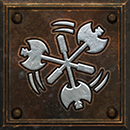
Whirlwind now has a +182% damage bonus at skill level 20 (previously +125%).- Whirlwind now grants +250% attack rating at skill level 20 (previously +145%).
- Whirlwind now gains 15% damage per point spent in Bash (previously 0%).
- Whirlwind now grants +60% attack rating at skill level 1 (previously +50%).
- Whirlwind now gains +10% attack rating per additional skill level (previously +5%).
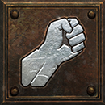
Bash now has a +365% damage bonus at skill level 20 with Stun level 20 (previously +245%).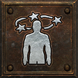
Stun now has a +285% damage bonus at skill level 20 with Bash level 20 (previously +160%).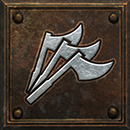
Frenzy now gains longer charge duration from Buff and Curse Duration on equipment.- Frenzy now retains its charge for 10 seconds at zero Increased Stamina and item duration bonuses (previously 6 seconds).
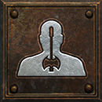
Concentrate now gains 10% damage per additional skill level (previously 5%).- Concentrate now gains 10% per hard point in Bash (previously 5%).
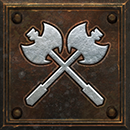
Double Swing now grants +325% damage at skill level 20 with 20 hard points in Bash (previously +200%).- Double Swing now gains +10% attack rating per additional skill level (previously +5%).
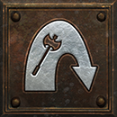
Leap Attack now gains 14% per hard point in Leap (previously 10%).- Leap Attack now deals 570–1,140 landing wave damage at skill level 20 with 20 hard points in Leap (previously 450–900).
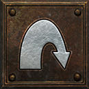
Leap now gains 1 yard knockback radius at +1 Area Radius from items (previously 0 yards).
 Amazon5 changes
Amazon5 changes
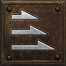
The Act II mercenary shares the stronger Jab; monsters retain vanilla Jab.- Jab now grants +30% damage before synergies at skill level 1 (previously −15%).
- Jab now gains +8% damage per additional skill level (previously +3%).
 Repeated Attacks still adds targets per sequence to Fend.
Repeated Attacks still adds targets per sequence to Fend.- Fend now gains 10% damage per point spent in Jab (previously 0%).
Sorceress3 changes
 Frozen Orb uses the same two-extra-orb limit for its shared damage; Volley Weight still applies.
Frozen Orb uses the same two-extra-orb limit for its shared damage; Volley Weight still applies.- Frozen Orb now shows “Maximum Projectiles from Items: +2” in its tooltip.
- Frozen Orb now accepts at most +2 extra orbs at any skill level (previously uncapped).
Druid13 changes
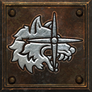
Feral Rage now gains longer charge duration from Buff and Curse Duration on equipment.- Feral Rage now retains its charge for 30 seconds at zero duration equipment bonuses (previously 20 seconds).
- Feral Rage now grants up to +120% run speed at maximum charge (previously +70%).
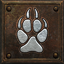
Werewolf now lasts 9,999 seconds at any skill level (previously 40 seconds plus Lycanthropy duration).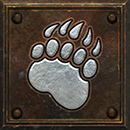
Werebear now lasts 9,999 seconds at any skill level (previously 40 seconds plus Lycanthropy duration).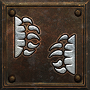
Maul now retains its charge for 30 seconds at +50% Buff and Curse Duration from items (previously 20 seconds).- Maul now gains +40% damage at each charge (previously +38%).
 Fury now gains 4% per hard point in Feral Rage (previously 0%).
Fury now gains 4% per hard point in Feral Rage (previously 0%).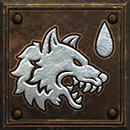
Rabies now gains 10% per hard point in Feral Rage (previously 0%).- Rabies now gains 10% per hard point in Lycanthropy (previously 0%).
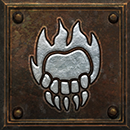
Fire Claws now costs 2 mana at any skill level (previously 4).- Fire Claws now gains 24% per hard point in Firestorm (previously 22%).
- Fire Claws now gains 24% per hard point in Molten Boulder (previously 22%).
User Interface
25 changes- Quivers now have their own Quivers loot-filter category (previously Ammo).
- The wiki's recipe pages now show every recipe as a Horadric Cube card, with a switch to a compact list.
- Added a quiver guide to the wiki with every quiver family, its rolls and sockets.
- Added gear guide pages on equipment mechanics, with navigation down the right side.
- Added a wiki guide for each of the ten skill-shape stats, listing the skills and items that change it.
- Wax runes are now part of the wiki's rune guide.
- The Build planner now shows a build at every character level.
- Shared build links now retain the original build values across releases.
- Runebands now appear in the Build planner and reward guides.
- Added socket jewellery and gem-feeding guides.
- Added a Magic and rare affixes guide to the wiki's Crafting menu. Choose an item type and base, then filter by quality and item level to see every prefix and suffix it can roll, with its range. It covers every base, including Signets, Pendants and quivers.
- Added a Corruption guide to the wiki's Crafting menu: where Hellforge Embers drop, which items can be corrupted, the chances (65% improved, 25% nothing more, 10% ruined), the mods each item type can gain, and which Cube recipes refuse a Corrupted item.
- The wiki's build planner can now share a build summary, plan respec stages, and restore a saved plan.
- Fixed a bug where the wiki and build planner showed the wrong value for stats that grow with character level, such as Eaglehorn's attack rating.
- The wiki's top bar and background no longer use blur and layered effects, which eases the load on graphics cards.
- Item pictures on the wiki no longer carry a separate shadow effect each.
- Overview pictures now load as you scroll.
- Every wiki page now loads a 7.2 MB data file (previously 12.1 MB); Cube recipes load only on the pages that show them.
- Updating a wiki saved for offline now downloads only the changed files instead of copying the whole saved copy.
- The Quivers guide now says a Hexed quiver's curse is Amplify Damage or Lower Resist, and that the Horadric reagents remake Hexed, Flight and Anointed quivers.
- Fixed a bug where the wiki's item database could stall the browser: it now shows 100 items at a time, with Show more for the next 100.
- Choosing an item in the item database now updates only its details instead of redrawing the whole list.
- Typing in the item database's search box now redraws only the results.
- Item tooltips no longer rebuild while the pointer stays on the same item.
- The Oil crafting guide now says plainly that an oil craft gives a fresh item: anything in its sockets is lost, and Signets and Pendants keep one empty socket.
Public Fixes
6 changes
- Deckard Cain now stands beside the stash and waypoint in Harrogath. Public issue #8
- Fixed a bug where the Eye of Reckoning removed the ethereal state from a unique it rerolled. An ethereal unique now stays ethereal, and a non-ethereal one stays non-ethereal. Sockets are still reset. Public issue #9
- Fixed a bug where monsters in endgame areas in Normal, including the Fractured Halls, dropped Act I and Act II potions and loot instead of loot for their area's level. Public issue #10
- Fixed a shrine that could appear inside the wall at the entrance of Cinders of Hatred Level 3. Public issue #12
- Fixed a bug where hovering the Echo of Mephisto did not show its health bar. Public issue #13
- Fixed a bug where Graven Arrows and Graven Bolts dropped with no sockets. They now drop with 1–3 sockets. Public issue #16
Bug Fixes
7 changes- Fixed a bug where Alkor's Transmutation could roll +511% Enhanced Damage in place of its drawback. Its drawback is now -10 to -15% Attack Rating (previously -10 to -15% Enhanced Damage).
- The Alkor's Transmutation that Web Mage the Burning drops has the same change.
- Lycanthropy no longer shows a duration bonus that does not extend the new shapeshift duration.
- Fixed a bug where Andariel, Mephisto, Radament, the Summoner, the named Council and other wrapped bosses dropped no Sanctuary Stone and no terror-zone uniques in Hell terror zones above about monster level 90.
- Fixed a bug where many monsters, champions, bosses and chests dropped loot from the lowest tier of their drop group at every level. They now move up the tiers by level, as in the base game.
- Fixed a bug where the loot filter listed many copies of Ring, Amulet, Jewel and some weapon and armour entries. Each item now has one entry.
- Fixed a bug where the minimaps of Hearthward Walls and Fire-Roots of Arreat did not draw their siege strips.
Earlier releases
0.2.028 OctQuivers, blades and the Last Vigil26 new items, 11 fixes, 3 balance changes0.1.026 OctThe road beyond Baal35 new items, 1 fix, 60 balance changes
Pre-release (private alpha)
0.0.409526 OctThe 0.1.0 release candidatePre-release (private alpha)0.0.407426 OctBlades that spin spellsPre-release (private alpha)0.0.406826 OctCorruption in one stepPre-release (private alpha)0.0.405025 OctFuller Descent, clearer bladesPre-release (private alpha)0.0.403825 OctWhirlwind for everyonePre-release (private alpha)0.0.403025 OctBinding Blades, finishedPre-release (private alpha)0.0.398325 OctBurrows of Pain rebuiltPre-release (private alpha)0.0.397625 OctBinding BladesPre-release (private alpha)0.0.395525 OctMore projectilesPre-release (private alpha)0.0.394425 OctPatch notes and news, rebuiltPre-release (private alpha)0.0.393225 OctStairs you can reachPre-release (private alpha)0.0.389725 OctBosses fall, edges thinnedPre-release (private alpha)0.0.386424 OctPits, Rubble and Barrows tidiedPre-release (private alpha)0.0.384824 OctRubble steadied, the Pits walledPre-release (private alpha)0.0.382124 OctMaps and corruptionPre-release (private alpha)0.0.370724 OctClaw of Prising, Sunken JunglePre-release (private alpha)0.0.369224 OctSentinel gearPre-release (private alpha)0.0.365624 OctSignature lootPre-release (private alpha)0.0.363024 OctMap moods and boss picturesPre-release (private alpha)0.0.358024 OctFading wallsPre-release (private alpha)0.0.356823 OctThe Claw of Prising and the Last VigilPre-release (private alpha)0.0.354823 OctThe Fighting PitsPre-release (private alpha)0.0.354423 OctStone map crash fixPre-release (private alpha)0.0.353923 OctRemnant and oil artPre-release (private alpha)0.0.353223 OctConvergence uniquesPre-release (private alpha)0.0.352123 OctRemnants and the Breath ladderPre-release (private alpha)0.0.348323 OctStone map crash testPre-release (private alpha)0.0.347323 OctRubble crash testPre-release (private alpha)0.0.344123 OctThe Pentagram of ChaosPre-release (private alpha)0.0.338323 OctCrash layouts, Golden Oil classes and the ClawPre-release (private alpha)0.0.326523 OctMap and boss repairsPre-release (private alpha)0.0.322222 OctOils as essencesPre-release (private alpha)0.0.319822 OctMap polishPre-release (private alpha)0.0.302222 OctOil craftingPre-release (private alpha)0.0.301222 OctRunecraft specialsPre-release (private alpha)0.0.299422 OctCrash candidates and a minimap testPre-release (private alpha)0.0.298022 OctCrash test copies with no placed objectsPre-release (private alpha)0.0.297522 OctCrypt crash fix and map repairsPre-release (private alpha)0.0.296222 OctCrash test copiesPre-release (private alpha)0.0.295522 OctVisible shrines, full uniques and a tougher Last VigilPre-release (private alpha)0.0.293122 OctCrash fixes firstPre-release (private alpha)0.0.291822 OctArreat's Defiance and crash fixesPre-release (private alpha)0.0.289922 OctThe Vigil and crash retestsPre-release (private alpha)0.0.263221 OctMap edges and vault repairsPre-release (private alpha)0.0.259721 OctSentinels at the shrinePre-release (private alpha)0.0.246020 OctAt the pinnaclePre-release (private alpha)0.0.243720 OctSnowbound roads and darker skiesPre-release (private alpha)0.0.242920 OctA prize in the VaultPre-release (private alpha)0.0.241120 OctMore ways to find gearPre-release (private alpha)0.0.144816 OctStones and deeper roadsPre-release (private alpha)0.0.86814 OctThe first steps belowPre-release (private alpha)